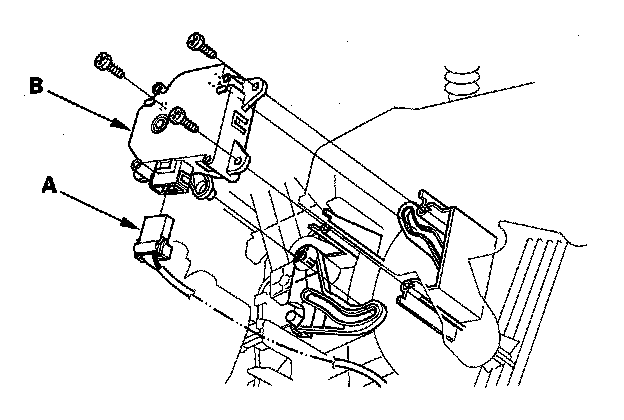

Driver's Air Mix Control Motor Replacement
Driver's Air Mix Control Motor Replacement1. Remove the driver's dashboard undercover.

2. Disconnect the 7P connector (A) from the driver's air mix control motor (B). Remove the self-tapping screws and the driver's air mix control motor from the heater unit.
3. Install the motor in the reverse order of removal. Make sure the pin on the motor is properly engaged with the linkage. After installation, make sure the motor runs smoothly.